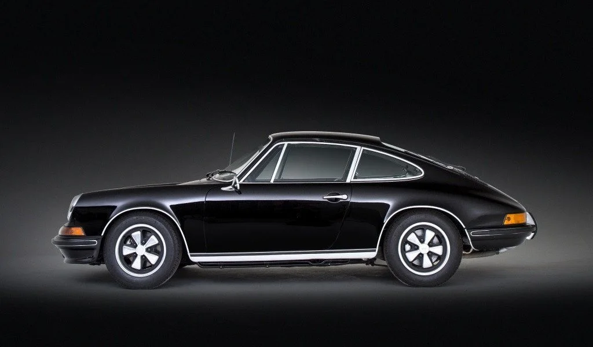
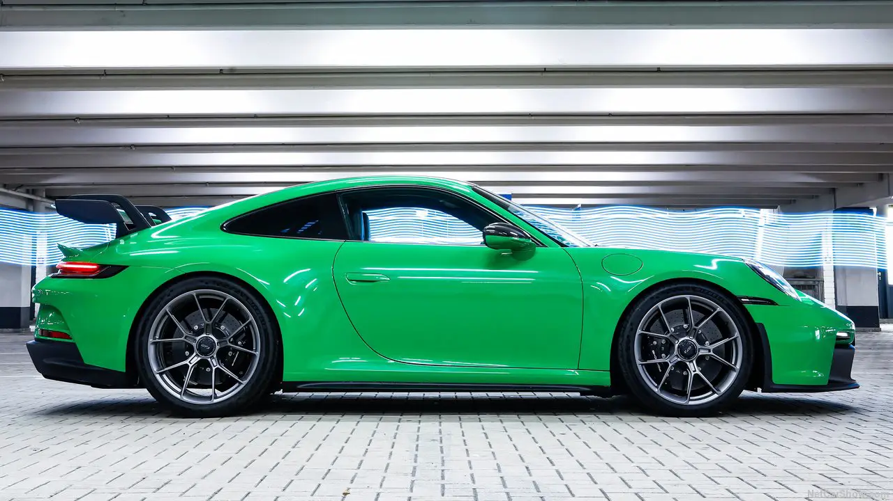

Hay diseños que envejecen con el tiempo. Y hay otros que parecen desafiar las leyes de la moda.
El Porsche 911 es uno de ellos.
Desde su presentación en 1963, ha evolucionado generación tras generación sin perder aquello que lo hace inconfundible. Basta una simple silueta para reconocerlo, incluso antes de ver su emblema.
Pocas máquinas pueden presumir de haber cambiado tanto sin dejar de ser ellas mismas.
El origen de una leyenda

El 911 original de 1963 — Una silueta que definiría una era
El 911 nació como el sucesor del 356, pero Ferry Porsche quería algo más que un simple reemplazo. Quería crear un deportivo que pudiera competir con los mejores de su época sin perder la esencia de la marca.
El resultado fue un diseño revolucionario: motor trasero, perfil bajo, faros redondos y esa característica línea de techo que se inclina hacia la parte trasera.
Mientras otros deportivos cambiaban radicalmente con cada nueva generación, Porsche tomó una decisión diferente.
En lugar de reinventarlo, decidió perfeccionarlo.
Cada nueva versión incorporó avances tecnológicos, mejoras aerodinámicas y motores más eficientes, pero siempre respetando las proporciones que hicieron del 911 un icono.
Proporciones perfectas
Su techo con caída suave, los guardabarros delanteros elevados, los faros redondos y su característica zaga forman una identidad visual que ha sobrevivido a generaciones enteras.
ADN inquebrantable
No importa si observamos un modelo clásico de los años sesenta o un moderno GT3 RS. Ambos comparten el mismo ADN.
Reconocibilidad instantánea
Desde cualquier ángulo, un 911 es inconfundible. Esa identidad visual es parte de su valor atemporal.
Ingeniería Esculpida por el Viento
El Porsche 911 ha evolucionado demostrando que un coche rápido nace de la armonía perfecta entre diseño e ingeniería. Su silueta icónica de gota de agua no se ha perdido; se ha ensanchado milimétricamente para albergar neumáticos de mayor sección y vías más anchas, otorgándole un agarre lateral masivo en las curvas.
Su capacidad para combinar el uso diario con un rendimiento extraordinario en circuito lo ha convertido en uno de los deportivos más completos jamás construidos.
Las curvas favorecen la aerodinámica mediante soluciones visuales funcionales: aberturas en el capó y rejillas de ventilación sobre las aletas delanteras que alivian la presión del aire atrapado en las ruedas, reduciendo la fuerza de elevación del morro.

El Porsche 911 — Un legado que sigue evolucionando sin perder su personalidad
El protagonismo final se lo lleva su alerón trasero activo de cuello de cisne y el fondo plano del chasis. Juntos, canalizan el viento para empujar el coche contra el asfalto en los circuitos, transformando la resistencia del aire en pura estabilidad sin romper la mítica línea del techo nacida en 1963.
Optimización de Pista e Integración de Materiales
Bajo esa carrocería ensanchada se esconde un chasis de competición controlable desde el puesto de conducción. El volante integra selectores giratorios analógicos que permiten al piloto ajustar la amortiguación en extensión y compresión, el diferencial trasero y el control de tracción en tiempo real, adaptando el coche a cada curva del circuito.
Esta precisión técnica se complementa con una estricta filosofía de construcción ligera. El uso masivo de plástico reforzado con fibra de carbono (CFRP) en las puertas, las aletas delanteras y el techo reduce el peso total y baja el centro de gravedad, asegurando que los cambios de apoyo en zonas viradas sean instantáneos y milimétricos.